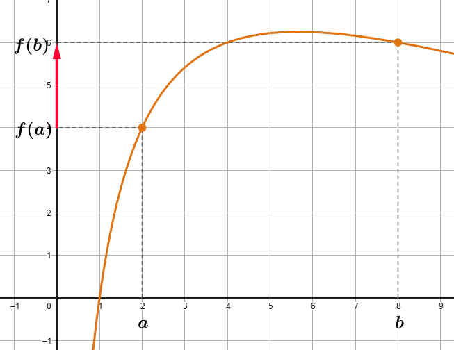
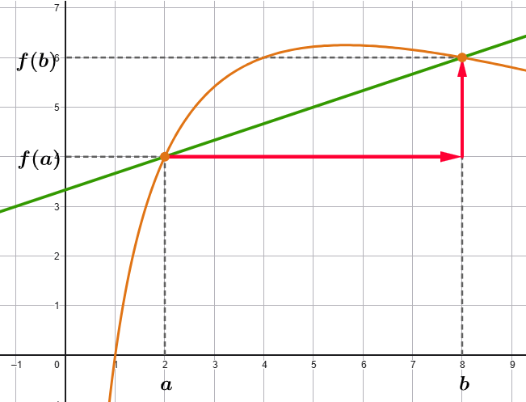

La variazione assoluta di una fuzione da \(x = \color{red}{}a\) ad \(x = \color{blue}{}b\) è la quantità
\[ f(\color{blue}{}b\color{black}{}) - f(\color{red}{}a\color{black}{}) \]
La variazione assoluta ci dice quanto varia l'output di una funzione.
Esempio
Consideriamo la funzione \(f(x) = 3x^2\).
Calcoliamo la variazione di \(f\) da \(x = \color{red}{}2\) a \(x = \color{blue}{}5\).
\[
\begin{align}
f(\color{blue}{}5\color{black}{}) - f(\color{red}{}2\color{black}{})
&= 3 \cdot \color{blue}{}5\color{black}{}^2 - 3 \cdot\color{red}{}2\color{black}{}^2 =
\\\\
&= 75 - 12
\\\\
&= 63
\end{align}
\]
Questo significa che se ci spostiamo dall'input \(x = \color{red}{}2\) all'input \(x = \color{blue}{}5\) l'output
della funzione \(f\)
aumenta di \(63\) unità.
Intepretazione grafica
Possiamo rappresentare graficamente la variazione assoluta di una funzione
attraverso una freccia sull'asse delle \(y\). Questa rende evidente se il valore della funzione da \(a\) a \(b\)
è aumentato o diminuito e di quanto.

Variazione relativa
La variazione assoluta di una fuzione da \(x = \color{red}{}a\) ad \(x = \color{blue}{}b\) è la quantità
\[ \frac{f(\color{blue}{}b\color{black}{}) - f(\color{red}{}a\color{black}{})}{\color{blue}{}b \color{black}{}- \color{red}{}a} \]
La variazione assoluta ci dice quanto varia l'output di una funzione in rapporto alla variazione dell'input.
Esempio
Consideriamo ancora la funzione \(f(x) = 3x^2\).
Calcoliamo la variazione di \(f\) da \(x = \color{red}{}2\) a \(x = \color{blue}{}5\).
\[
\begin{align}
\dfrac{f(\color{blue}{}5\color{black}{}) - f(\color{red}{}2\color{black}{})}{\color{blue}{}5 \color{black}{}\color{red}{}2}
&= \dfrac{3 \cdot \color{blue}{}5\color{black}{}^2 - 3 \cdot\color{red}{}2\color{black}{}^2}{\color{blue}{}5 - \color{red}{}2} =
\\\\
&= \dfrac{75 - 12}{5 - 2}
\\\\
&= \dfrac{63}{3} = 21
\end{align}
\]
Intepretazione grafica
L'incremento dell'output, \(f(b) - f(a)\) è rappresentato dalla freccia verticale.
L'incremento dell'input, \(b - a\) è rappresentato dalla freccia orizzontale.
Il loro rapporto \(\dfrac{f(b) - f(a)}{b - a}\) è il coefficiente angolare della retta secante i due
punti del grafico di \(f\).

Esercizio
Consideriamo la funzione
\[
f(x) = ln(x - 2) - ln(x + 2)
\]
Individuarne il dominio, studiarne il segno al variare della \(x\) e studiarne il comportamento
in corrispondenza degli estremi del dominio.
Soluzione
Il dominio della funzione
\[
D = (2\,,\,\,+\infty)
\]
La funzione assume valore negativo per \(x \in D\)
Consideriamo la funzione
\[
f(x) = e^{\sqrt{\frac{2 - x}{-4x + 12}}}
\]
Individuarne il dominio, studiarne il segno al variare della \(x\) e studiarne il comportamento
in corrispondenza degli estremi del dominio.
Soluzione
Il dominio della funzione
\[
D = (-\infty\,,\,\,2] \cup (3\,,\,\,+\infty)
\]
La funzione assume valore per ogni \(x \in D\).